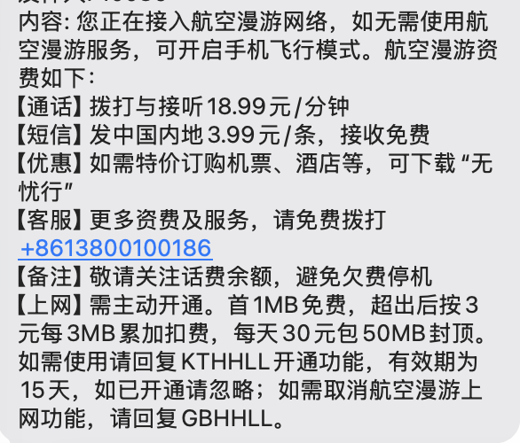

奶昔🥤
@realNyarime
@ddvd233 AeroMobile，这个东西50MB用完就接近断网，非常慢。像一些台湾等地区的运营商都有免费送的，以前Panisonic方案，包括国内的HU航也是

dvd@dvd.chat
@ddvd233
发现中国移动也可以在飞机上打电话和收发短信了，感人至深
甚至还有上网功能，虽然有 50 MB 的上限...？ https://t.co/e2YgZgKgeh